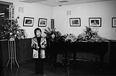
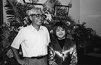
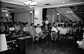

97.9.1（月）
今日から新学期、じゃなかった夏休み明けである。みんな浮かれていて仕事になっていない。といっても、原動画とも入るはずの仕事が入らず手空き状態なのだ。
次作品メインスタッフコーナーを若干手直し＆制作部＆業務部＆出版部の席変え。
97.9.2（火）
帝国ホテルにて、「もののけ姫」日本映画新記録樹立報告会が行われる。
左から東宝・石田社長、宮崎監督、徳間社長 |
午後5時より、帝国ホテルにて、「もののけ姫」日本映画新記録樹立報告会が行われた。会見場には150名余りのマスコミ関係者が詰めかけ、東宝 石田社長、徳間書店 徳間社長、宮崎監督が会見に応じた。まず、石田社長より興行成績についての報告が行われた。石田社長「8月末までの興行成績は、入場者数877万人、興行収入約120億円。既に邦画のあらゆる記録を破った。9月中旬には確実に1000万人を突破する。入場者数が1200万人となれば配収は約100億円となり、これまでNo.1だった「E.T.」の配収96億円を越えることが、現実味を帯びた話となった。
成功の要因の1つに、客層の広がりが挙げられる。公開当初は男性が多かったが、今は女性が６５％を占める。年輩の女性が目立つのも特徴。」
次いで徳間社長の発言。その軽妙さに、会見場は爆笑の渦となった。徳間社長「28才で読売新聞を辞めてから、8回の倒産、不渡りを経験してきた（笑）が、日本一になったのは初めて。これも宮崎監督と鈴木プロデューサーをはじめ、制作に関わった皆さんの努力のおかげ。ここまで来たら、何がなんでも「E.T.」を抜く。「E.T.」を抜かなければ、東宝とは二度と手を組まない（爆笑）。「E.T.」は1150万人、「もののけ姫」の目標は1200万人。何だ、ほんのちょっとしか差がないじゃないか（笑）。しかしわずかな差でも1位は1位。オリンピックだって、ほんのゼロ・コンマ何秒の差で金メダルになるんだから。でもどうせなら、今後どんな作品がきても、21世紀になっても抜かれないような成績を残したい。まあ、22世紀はわからないけれど（笑）。UIPの、ええと、なんという映画だったかな、え、ああ、「ロスト・ワールド」（大爆笑）、そうそう、「ロスト・ワールド」を作ったマイケル・ウィリアムス・ジョーンズ会長からも祝電をいただいた。宮崎駿、あんたはえらい！（大爆笑）。」
最後に、この会見のために山小屋からわざわざ出てきていただいた宮崎監督から一言。
「最後のキャンペーン地の長野で、最後にパチンコをしていたらフィーバーしたんですが、そのときに鈴木プロデューサーが、「もう時間です」と（笑）。そのまま隣のおばさんに譲って来たんですが、最高の終わり方でした（爆笑)。ジブリはいつも作品が失敗したら終わり、そういう方針で全てをかけて作品を作ってきたんですが、こういう底抜けのフィーバーになることもあるんですね。そうとしか言えないです。何でこうなったかというのは、よくわからないです。実は今まで山小屋に籠もっていたものですから、世間がどうなっているのか、よく知らないんです。鈴木プロデューサーからは、ペイラインに達したときに「ペイしました」とだけ連絡を受けて、「そうですか」と。「E.T.」を抜くとか、そういう事にはあまり感慨はないんですが、エンターテイメントというのは、出資者に責任を持たなければならない。そうしないと、次の若者たちのチャンスを奪うことになる。そういう意味では、ペイラインに達したことがうれしかったです。」
以上、会見は5時50分に終了しました。
続いて、制作関係者、マスコミ関係者に、映画の上映館の興行担当者を招いての祝宴が開かれ、300名余りが参加。これまでのご協力に感謝するとともに、これに満足することなく、「E.T.」の記録を突破すべく、気勢を挙げる会となりました。
尚、9月2日の朝日新聞夕刊１面トップ記事に「もののけ姫」邦画新記録達成の記事が掲載されています。
97.9.4（木）
来年の研修生の募集について各部署の担当者と打ち合わせ。今回はCG部も募集するのだ。後日ホームページにも募集告知する予定。
田辺氏がお休み。
97.9.5（金）
ジブリでも何度か、社内パーティ等でスパゲティを注文していた東小金井南口のイタリア惣菜屋グラツィエが7月末で店を閉めてしまったのだが（評判はとてもよかった）、その後そこにできた○湾料理屋がかなりきているらしい。
制作業務部・望月氏と高畑監督の三人で、エヴァンゲリオンを題材に怪しげな議論がなされる。因みに、高畑監督も、先日の一挙再放送でほとんどの話数を見ている。
私が引っ越した後の遺跡から、インターネット担当・石光さんの入社試験の作文が発掘される。読もうと思ったら血相を変えた石光さんに強奪されてしまった。彼女の隣に座っている柳沢さんから白い眼で見られる（眼の奥では「セクハラ野郎」と言っていた気がする…）
97.9.6（土）
以前ジブリで働いていた○○○氏を再びジブリに呼び戻そうと、鈴木プロデューサー、高畑監督、保田さんが、食事に行こうと称し、取り囲み説得。結果は不明。
キャラクターの参考にならないかと、田辺さんが林明子の絵本を大量に持ってくる。その絵本を見ながら高畑監督が田辺さんに「この本の話しはぬんぬん…」と質問したら、彼は「あ、話しは読んでないです」と一言。高畑監督は思わず田辺さんを蹴っていた。
97.9.8（月）
キャラクターの○○に、小西くんが××で色を付けたものを、スキャナーで取り込み動かしてみる。しかしまさかこの手法で全編作るって言わないだろうな。
小西、田辺、伊藤、石曽根、武重、田中直哉、高畑監督と、監督の自宅近くにある東大泉中央公園にロケハン（!?）。その後監督宅で、全員が夕食をご馳走になる。監督のクラシック講座も聞ける。
宮崎監督が出社。古林さんや建築会社の人たちと、ジブリ社屋改造計画の打ち合わせ。
ツール・ド・信州でお世話になったペンション「赤い鳥」から、手紙と集合写真等が送られてくる。ジブリ側では集合写真を撮ってなかったので参加者は大喜び。しかし、このペンションのメチャクチャおいしかった食事が忘れられない…。
97.9.9（火）
ジブリの一階を改造すべく、まず膨大な絵の具を倉庫に預けるための整理、箱詰めを始める。ところが、おおまかに数えてみたところ、段ボールが200個以上必要なことが発覚。段ボールを揃えないと収納がうまく行かない可能性があるため、スタックで使っている絵の具入れ用段ボール箱をわけてもらうことに。
日本新聞協会のCMをジブリが制作し、近日オンエアが開始される予定であるが、その歌とナレーションをホームページにもよく登場する○○さんが担当している。
97.9.10（水）
高畑監督が、次作の参考に「茗荷を食べると物忘れがひどくなる」との迷信（？）や電車にタンツボが置いてあった記憶があるか、等の質問をスタッフに聞いて回っている。
警視庁から十数人が来社し、自転車置き場の非常用トイレの見学。古林総務部長自ら組み立ての実演。
ようやく鈴木プロデューサーと来年度の新人募集について打ち合わせを行う。ついでに社員旅行の話しも。
97.9.11（木）
宮崎監督またも来社。社員にトマトを配る。
7時よりジブリ1階バーに於て、米良美一さんのコンサートが開かれる。コンサートに備え、当日朝から机や植木を全て運び出し、グランドピアノをセット。7時前には、製作各社やメイジャー等の人たちも加わり、バーは100人以上の人たちで埋め尽くされた。通常のコンサートホールとは違い、客席が異常に接近しているため、米良さんもかなり緊張気味の様子。コンサート前半は米良さんの持ち唄を中心に、日本の唄から黒人霊歌、モーツァルトまでを熱唱。15分の休憩をはさんだ後半は、予めジブリ内外のスタッフから集めたリクエストを元に、徳間社長推薦の五木ひろしからスタート。ラピュタの「君をのせて」からJ.Sバッハの「マタイ受難曲 憐れみたまえ」まで実にレパートリーは幅広い。結局アンコール3曲を含めて実に2時間にも及ぶコンサートとなる。終了後は当然のごとくジブリスタッフからのサイン攻め。因みにその夜のスタジオからは怪しい裏声で唄を歌うスタッフ達の声がそこここから聞こえていた。
ちなみに米沢さんは、米良さんと飲みに行く約束をとりつけ、驚喜乱舞。



97.9.12（金）
正面玄関のガラスが割れる。と言っても別に襲撃があったわけではなく、昨日のコンサートの為に外に出しておいた植木を元に戻そうとして誤って割れてしまったもの。
今日も宮崎監督が出社。
一階にあった絵の具棚を解体する。
97.9.13（土）
5時より会議室に於て、次作から導入されるデジタルペイント等による本格的な作品のコンピュータ化に向けて、実作業面で変更しなければならない。
夜、9時頃から百瀬さん、奥井さんとメインスタッフによるコンピュータ対策会議（？）が行われる。高畑監督が心配している点は、実際デジタルペイントになってしまうと、たとえば今まで演助がやってきた撮出しの作業がまったく違ったものになってしまう点や、どの部分で高畑監督のチェックが入るのか、編集はノンリニア編集にするのか等々、様々な変化が要求される点である。はたして的確で効率の良いチェックができるのか。当然問題山積みのまま散会。これからの課題は多い。
97.9.16（火）
花札の「こいこい」の遊び方を高畑監督が知りたがっていたため、インターネットにてルールを調べる。
次作の制作デスクとして元ジブリ、現京都アニメの神村氏が出向で参加することに。来月頭から出社予定。
97.9.17（水）
高畑監督が「闇鍋」を知っているか、スタッフに聞いてまわる。20歳代のスタッフは主に大学の先輩や学園祭で、30歳以上のスタッフは「巨人の星」のエピソードで知った人が多いらしい。
絵コンテ用紙はやはり「平成狸合戦ぽんぽこ」の時に使ったA3、5コマの角が直角なバージョンにほぼ決定するが（宮崎監督と高畑監督では絵コンテ用紙の好みが違うのだ）、その時に使った原版が何故か見つからない。また作らなきゃ。
97.9.18（木）
バーにて宮崎監督が糸井重里氏と対談。
昨日まで休暇を取って屋久島に行っている作画の田村君が台風の影響で帰ることができないらしい。よって今日もお休み。
97.9.19（金）
鈴木プロデューサーと奥田さんが「電車でGO！」にはまっている。という訳で夜の10時から東小金井駅前のゲームセンターで高畑監督（実はけっこう鉄道マニアである）も交えて腕を競い合う。
資料用に借りてきた「月光仮面」のテレビ版及び映画版の鑑賞会が行われる。あまり参考にならず。
97.9.20（土）
次作の脚本が高畑監督によって、またそれと平行して絵コンテが田辺氏よって徐々に形になりつつある。
高畑監督が東映の実写助監督をやったときに、いろんなシーンにエキストラとして出演した某映画のビデオを演助石曽根氏が借りてくる。冒頭の空港シーンに若き日の監督を確認できたものの、そのほかはほとんど分からず。
97.9.22（月）
小西氏がラフ絵コンテ作業に参加。
徐々に進行している高畑監督の脚本作業であるが、メインスタッフには配られていたシノプシスが鈴木プロデューサーに渡っていなかったことが発覚。恨まれる。
97.9.24（水）
上條恒彦氏の奥さんと子供達が来社。再び山を下りてきた宮崎監督の案内で社内をまわる。
宮崎監督と社員旅行の相談。行き先は某所に決定。
仕上げで余った段ボールを倉庫に運ぶが、そろそろものを置くスペースが無くなってきた。整理せねば。
97.9.25（木）
「メインスタッフに入るのはプレッシャーが…」と言って、なかなかメインスタッフコーナーに来なかった百瀬さんがようやく荷物を小西君のとなりに移動。
次作の絵を一度実験的にフィルムにする予定であるが、現在のところデジタルカメラがまだ 1．全て手動で動かさなければならない。2．色の管理ができていない、等の問題があるため、通常のフィルム撮影＋デジタル合成で来週中には何とかしたい。
だいぶ前のことになるが、「進め！電波少年」のスタッフが「宮崎監督はこの作品を最後に本当に引退するのか」を確かめに来社したが、その時の映像は放送されないまま。その理由は、あまりにも簡単に監督にインタビューができたかららしい。アポなしの突撃取材でジブリにも2回やって来ていることだし、闇に葬られた映像はかなりの数になりそう。
97.9.26（金）
高畑監督が今日は学校の為、夜出社。のはずが授業が長引きお休み。
午後突然「以前研修でお世話になった石曽根と申しますが、宮崎監督をお願いします」と謎の電話がかかってくる。勿論当の石曽根氏は現在ジブリの社員である。電話はこちらがもめている間に切れてしまったが、宮崎監督あての怪しい電話もとうとうここまで来たかという感じだ。
97.9.27（土）
イタリア在住のベテラン日本人アニメーターが、イラストレーターの娘さんと、弟子のイタリア人アニメーターと共に来社。社内見学。
メインスタッフコーナーに美術の田中直哉氏と武重洋二氏の机を置くことになる。またスペースを拡げなきゃ。
職場委員会が行われる。
97.9.29（月）
月に一度の月曜休み。
97.9.30（火）
美術の田中直哉、武重両氏の机をメインスタッフルームに設置。設置に際して、鈴木プロデューサーから、スミの机に山積みにしてあった演助伊藤氏の荷物を「早急に片付けろ！」と指示がある。伊藤氏はさっそく荷物を片付け、机の設置は30分程で無事終了する。ただし、その荷物が、今は山小屋へ行っていない宮崎監督の部屋のスミに、ただ置かれているだけだということに気づいている者は少ない…。
田中直哉、武重両氏が今まで描き溜めたイメージボードを高畑監督に見てもらう。
「スパイのよねちゃん」こと米沢さんに、「のなかくん」人形に続く「よねちゃん」人形は作らないのか、という手紙（ファンレター?）が届く。米沢さんは「どうしましょうかねえ」と嬉しそうに鈴木プロデューサーに報告していた。
| 次のページへ |
| 日誌索引へ戻る |
| 「もののけ姫」トップページへ戻る |